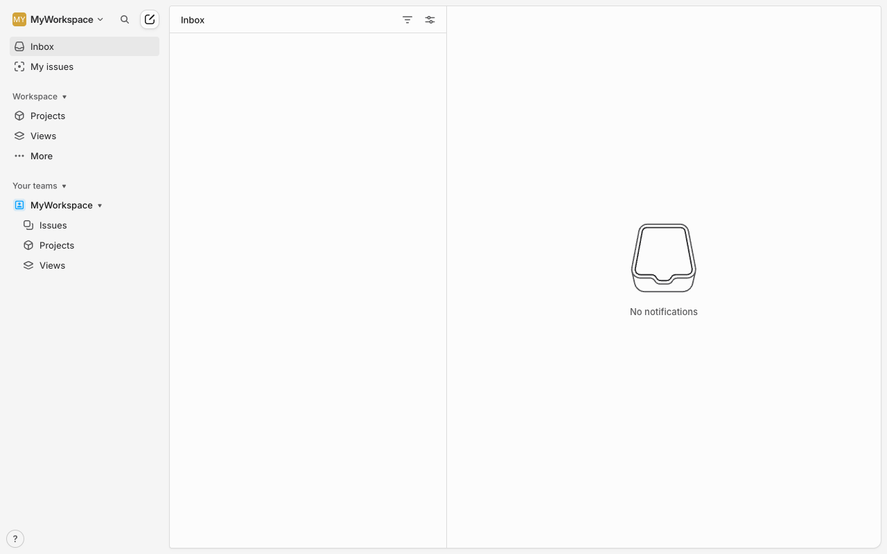
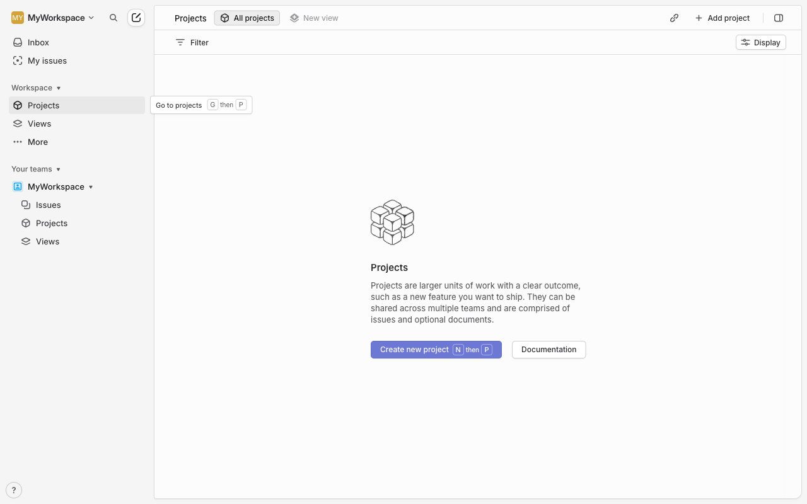

🧠 How This Automation Works
This report shows the step-by-step execution of an AI-powered browser automation system. Two AI agents work together to complete your task:
- Planner Agent GPT-4 - Creates a strategic plan by breaking down your task into logical steps (navigate, login, interact, verify).
- Vision Agent GPT-4 Vision - Analyzes screenshots in real-time to decide which buttons to click, forms to fill, and actions to take.
The Process: The Planner creates the initial roadmap, then the Vision Agent looks at each screenshot and decides the best action to move forward. If the plan doesn't work perfectly, the Vision Agent adapts and explores alternative paths to complete your task.

What the AI sees: 1. The screenshot shows the Linear app's interface after logging in, displaying an "Inbox" section on the main dashboard. The sidebar includes sections for "Workspace" and "Your teams," with options like "Inbox," "My issues," "Projects," and "Views." The main area indicates "No notifications."
2. The page is in a state where the user's inbox is currently empty, with no new notifications or messages to display.
3. Next, the user might expect to navigate to other sections such as "My issues" or "Projects" to manage tasks or view team activities. Additionally, new notifications might appear as tasks are updated or created.
The automation likely navigated from the inbox to the projects overview page within the "myuniqueworkspace456" workspace. This is indicated by the URL change from the inbox to the projects endpoint, suggesting a shift from managing tasks to viewing all projects.

What the AI sees: 1. The screen displays the "Projects" section of a workspace without any active projects. It shows a central icon with a description of "Projects" and two buttons: “Create new project” and “Documentation.” The sidebar includes navigational links to "Inbox," "My issues," and "Projects."
2. The action taken is clicking on the "Create new project" button to initiate the process of creating a new project.
3. Clicking "Create new project" will prompt a form or dialog to gather information about the new project, allowing the user to enter details and eventually save or start the project.
Upon clicking the 'Create new project' button, a project creation form appeared on the same page, allowing the user to input details for a new project within the existing workspace. The URL remained unchanged, indicating in-page interaction.
What the AI sees: 1. The screen displays a "New project" form within a workspace, where fields for "Project name," "Add a short summary," and "Write a description" are visible. There are buttons for categorizing the project, such as "Backlog," "No priority," "Lead," "Members," "Start," "Target," and "Labels."
2. The page is in an idle state where no text is entered into the fields, and the keyboard is currently not in use.
3. Next, the user is expected to input the project details into the available fields and select the appropriate categorization options before clicking the "Create project" button to finalize the setup.